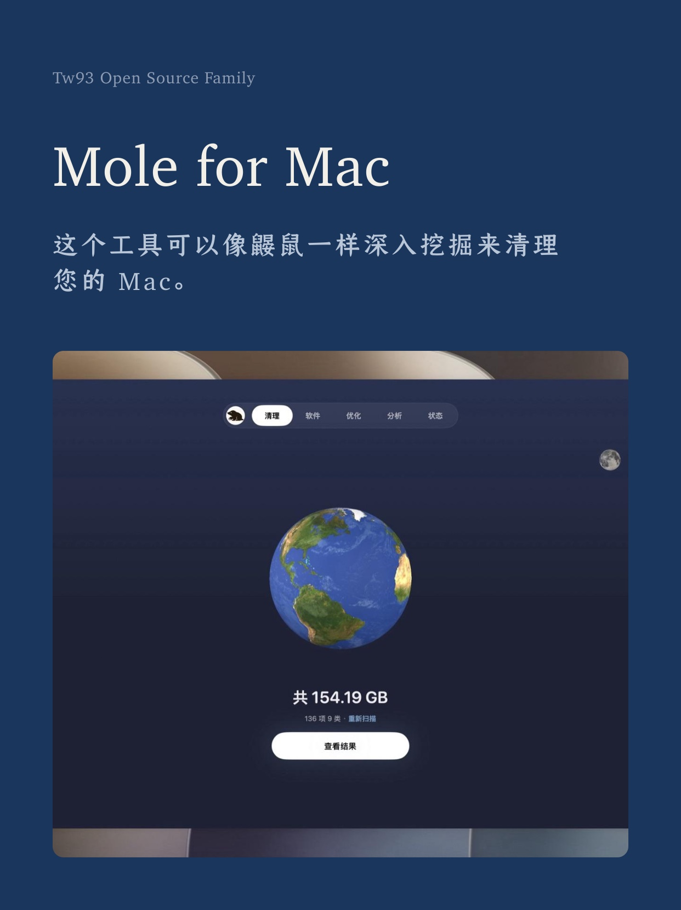
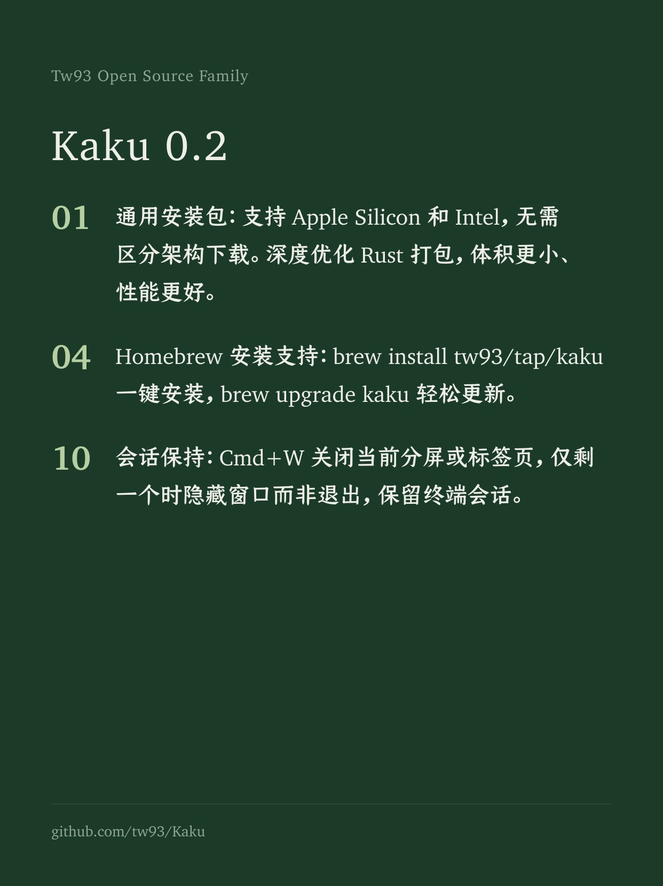
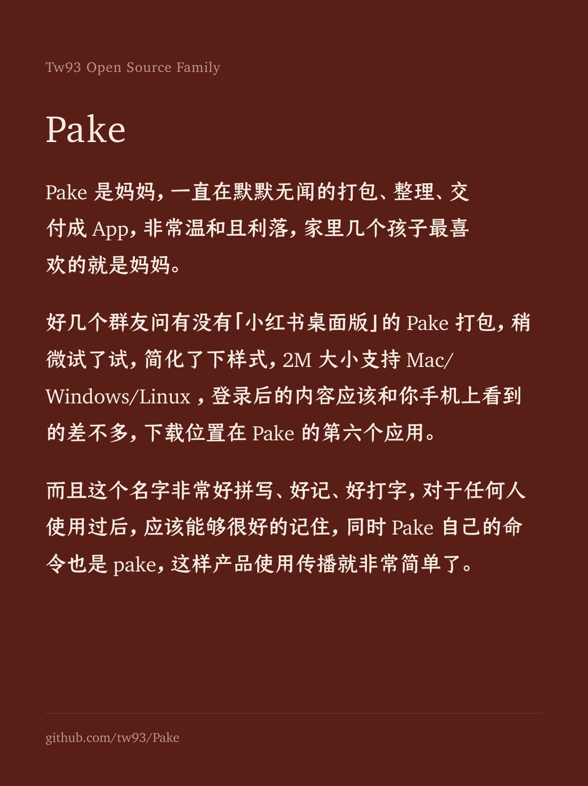
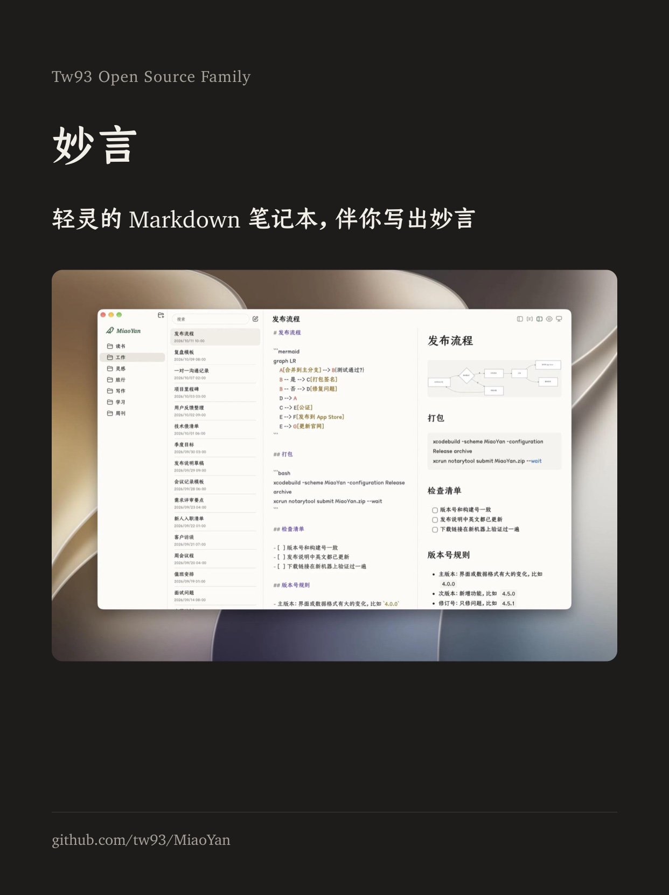

Kami紙
好內容，值得好版面。Kami 給 AI 一套文件範本與排版規則，履歷、報告、簡報和產品官網都能做。
輸出樣本
告訴 Claude 要什麼文件就行，下面是財報、履歷、一頁紙和簡報的實際輸出，同樣的要求也能交給繪圖模型，README 裡有提示詞和示例。

財報分析 · 中文
Tesla Q1 2026 財報點評

履歷 · 英文
創辦人履歷，2 頁

一頁紙 · 中文
Kami 介紹，白底列印版，1 頁

Slides · English
Agent 演講簡報，共 8 頁
社群分享圖
小紅書和 X 的配圖，有八種底色可選，下面四張用的是我幾個產品發過的原話。

Mole
封面，墨藍底

Kaku
列表，松綠底

Pake
正文，磚紅底

妙言
截圖，炭黑底
用 Kami 搭建
基於這套網頁範本搭建的三款產品官網。


安裝與使用
裝好後直接對 Claude 說「幫我做一份履歷」或「幫我排版一份白皮書」，Kami 會自己接手，不用輸斜線指令。
# Claude Code、Codex、Cursor 及其他 Agent npx skills add tw93/kami -a claude-code codex cursor -g -y # Claude Code 外掛，需要 v2.1.142 以上 /plugin marketplace add tw93/kami /plugin install kami@kami # Codex 外掛 codex plugin marketplace add tw93/kami codex plugin add kami@kami # Claude Desktop 下載 kami.zip，在 Customize > Skills > "+" > Create skill 中上傳
FAQ
- Kami 是什麼？
- Kami 是給 AI 用的一套文件範本與排版規則，Claude Design、GPT Canvas 這類設計工具也可以拿它當排版參考。
- 能生成什麼？
- 九種文件範本、中英韓官網範本和 18 種 SVG 圖表，文件可以匯出 PDF 或 PNG，簡報還能匯出可編輯的 PPTX。
- 可以換成自己的品牌風格嗎？
- 可以，把品牌色、字體和版式偏好直接告訴 Agent，或者給一份品牌設定，都以你的要求為準。
- 支援哪些語言？
- 英文和中文支援得最完整，日文和韓文會按各自的字體和排版習慣調整，交付前再檢查一遍，預設字體依次是 Charter、TsangerJinKai02、YuMincho 和 Source Han Serif K。
設計緣起
我喜歡美股投資，經常讓 Claude 寫研究報告。每次出來的東西都是同一種預設文件的樣子：灰撲撲的，結構不清晰，格式老舊，換個對話就換一套排版，沒有一份讓人想讀下去。於是我開始一條一條地調字體、配色、間距，直到報告變成一份自己真正願意看的頁面。
後來要去做《你不知道的 Agent：原理、架構與工程實踐》分享，手上已經有文件，不想再做 PPT，就用 Claude Design 按自己的設計風格來排版，反覆調了很多輪，最後慢慢滿意了。後來加入 SVG 圖表，統一配色與間距，逐漸用在常寫的各種文件上，再把範本和規則整理成了現在的 Kami。
設計原則
預設是暖米色的紙、墨藍色的強調色和襯線字體，標題和內文靠字級和間距分開，列印時可以換白底，卡片和表格還保留暖色。
頁面底色是 parchment
#f5f4ed，列印時可以用白底只有一種強調色，墨藍色
#1B365D灰色都偏暖，帶一點黃褐，不用冷藍灰
標題和內文用同一套襯線字體，介面控制項可以用無襯線
內文字重 400，標題 500，不用合成粗體
行距分三檔，標題 1.1-1.3，密排 1.4-1.45，閱讀 1.5-1.55
標籤底色只用實色 hex，rgba 在 WeasyPrint 裡會畫出雙層矩形
預設是平的，只有真正浮起來的截圖和彈層才加一層很輕的陰影
暖調克制
一種強調色配暖灰，墨藍色不超過頁面面積的 5%。
畫布
Parchment
頁面底色
#F5F4EDIvory
卡片 · 浮起容器
#FAF9F5Warm Sand
按鈕底色 · 可點區域
#E8E6DCDeep Dark
深色頁面的底，略帶橄欖色，不是純黑
#141413主調
Ink Blue
主色 · CTA · 標籤 · 章節標題
#1B365DInk Light
深色底的連結色
#2D5A8ADark Surface
深色容器 · 暖炭灰
#30302EError
錯誤提示，偏暖的紅
#B53333中性
Near Black
#141413Dark Warm
#3D3D3AOlive
#504e49Stone
#6b6a64標籤底色
只用兩檔實色，#EEF2F7 用來弱化，#E4ECF5 是預設，實色也能避開 WeasyPrint 的雙層矩形。
低調
#EEF2F7預設
#E4ECF5字體系統
標題和內文用同一套襯線字體，程式碼用等寬字體。
紙 Aa
Serif · 標題 + 正文
TsangerJinKai02 / Charter
標題、內文、引語和要強調的數字都用它，中文是倉耳今楷，英文是 Charter。
</>
Mono · 程式碼
JetBrains Mono
用在程式碼區塊、版本號、hex 值和需要等寬的數字上，比內文小一檔。
層級 · 螢幕 px ≈ pt × 1.33
值得好版面
weight 500
line 1.10
weight 500
line 1.20
weight 500
line 1.25
weight 500
line 1.30
weight 400
line 1.55
weight 400
line 1.55
weight 400
line 1.40
weight 400
line 1.45
weight 600
line 1.35
節奏與形
以 4pt 為單位，內容多時收窄頁邊距，正式信件這類文件留寬一些。
| Scale | Value | Use | |
|---|---|---|---|
| xs | 2-3 pt | 同行內元素 | |
| sm | 4-5 pt | tag padding · 緊湊佈局 | |
| md | 8-10 pt | 元件內部 | |
| lg | 16-20 pt | 元件之間 · 卡片 padding | |
| xl | 24-32 pt | section 標題 margin | |
| 2xl | 40-60 pt | 大 section 之間 | |
| 3xl | 80-120 pt | 長文件章節之間 |
圓角尺度
深度
預設是平的，層級先靠留白、安靜的底色或一條中性細線拉開，只有真正浮起來的截圖和彈層才加很輕的陰影。
原子元件
常見文件裡會用到的幾種基礎元件。
按鈕
填色 + 邊框 · 無陰影 · 8px 圓角
標籤 · 兩檔
實色 hex · 弱化或預設
引用
olive 色 · 無側邊線
一千個 no 換一個 yes，寧可清淡，不可濃豔。
指標卡
serif 數字 + sans 標籤 · tabular-nums
章節標題
serif 500 · 15pt · 純字級層級，無裝飾
純文字列表
用間距形成節奏 · 不加符號
- 暖米色紙底，列印時可用白底
- 墨藍色點綴，不加第二種顏色
- 襯線字體區分層級
程式碼區塊
4pt 圓角、mono 字體，無邊框
// 暖米紙，一種強調色 canvas = parchment; accent = ink_blue palette = warm_neutrals − cool_grays document = serif × hierarchy + generous_space beauty = constraints × intention ÷ noise
安靜卡片
ivory 淺色底 + 8px 圓角 · 無邊框和陰影
Tesla 公司介紹 · One-Pager
單頁 A4 · 中文版 · 4 張指標卡 + 3 段正文 + 時間線
內聯圖表
十八種 SVG 圖表，架構圖、流程圖和資料圖都有，告訴 Claude 要哪種圖就會畫進文件，配色和字體跟內文一致。
系統元件與連接關係，一個焦點節點
決策分支，Yes / No 路徑，焦點為成功路徑
季度營收對比，可選顏色漸變或單色
營收結構拆解，支援 3-6 個分段
決策速查
按要做的事找對應做法，表裡沒有的就回到上面的設計原則。
| 要做什麼 | 怎麼做 |
|---|---|
| 大標題 | serif 500，字級按層級，line-height 1.10-1.30 |
| 正文閱讀 | serif 400，9.5-10 pt，line-height 1.55 |
| 強調一個數字 | color: var(--brand)，不要粗體 |
| 分隔兩段內容 | 先用留白，邊界必須明確時才加一條 0.5pt 的中性細線 |
| 引用某人的話 | olive 色，不加側邊線 |
| 展示程式碼 | ivory 底 + 4pt 圓角 + mono 字體，無邊框 |
| 區分主次按鈕 | Primary 品牌色填充 + ivory 字，Secondary warm-sand + charcoal |
| 標註某張特殊卡片 | 用更明確的標籤或安靜底色，不加強調邊 |
| 章節開始 | serif 500 · 15pt · 純字級層級，無額外裝飾 |
| 文件封面 | 單頁 Display 字級 + 右對齊作者/日期 + 大量留白 |
| 展示關鍵數字 | 沿基線排成一行，不加容器，墨藍色的 serif 大數字配 sans 小標籤 |
反面示例
最常見的幾個問題和對應的做法。
頁面底色
忌頁面背景用 #ffffff 純白或 #f3f4f6 冷灰，版面會顯得硬，也沒了紙的感覺。
宜預設使用暖米色 #f5f4ed，白底列印版除外，列印時把 @page background 也設為同色，避免白邊。
標籤底色
忌Tag 用 rgba(27,54,93,0.18)，WeasyPrint 會讓 padding 區與字形區透明度疊加，形成雙層矩形。
宜直接使用登記過的預設標籤色 #E4ECF5，顏色穩定，PDF 也乾淨。
合成粗體
忌標題用 font-weight: 600 或更粗的合成 bold，筆畫容易變糊，版面也會顯得粗重。
宜內文 400，標題用真實的 W05 字重 500，要更醒目就加大字級、拉開間距或用墨藍色，不靠合成粗體。
陰影
忌box-shadow 硬投影 0 2px 8px rgba(0,0,0,0.3) 觀感偏硬，印刷時也容易發黑。
宜預設是平的，層級靠留白、安靜的底色或中性細線，很輕的陰影只留給真正浮起來的介面和截圖。